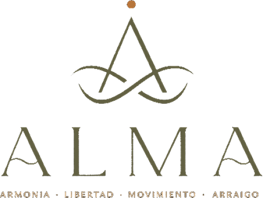

Capstone team — Oliver · Miguel · Lisa · Caragh · Andre Residual land-value model · IE MRED 2026
UZP 02.02 · Vicálvaro · Madrid

A residual land-value model for the densification of the ALMA site — the land value it creates, how the land is distributed, and what the city gets.
ALMA · UZP 02.02 · Vicálvaro, Madrid
Capstone Dashboard
A densification proposal for ALMA, modelled end-to-end: the residual land value it creates, how the land is distributed, and what the municipality gets. All figures flow from one model.